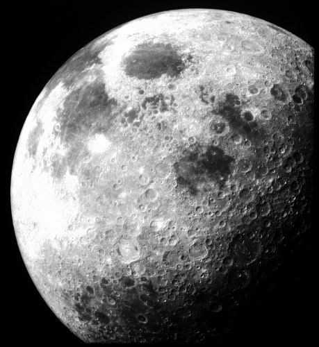

Місяць єдиний природний супутник Землі який з'явився близько 4,6 мільярда років тому. Наш супутник перебуває в синхронному обертанні з Землею, це означає, що він завжди обернений до Землі лише одною стороною.

- По поверхні Місяця ходило лише 12 чоловік і всі вони американці. Першою людиною яка залишила свій слід на Місяці був Ніл Армстронг в 1969 році, а останнім сьогодні став Джин Сернан в 1972 році. З того часу Місяць відвідували лише безпілотні апарати.
- Місяць є п'ятим по величині супутником в Сонячній системі. Найбільшим є супутник Юпітера
- Щільність Місяця набагато менша за щільність Землі. Через це на Місяці ви будете важити близько однієї шостої (16,5%) вашої земної ваги.
- Оскільки Місяць не має атмосфери він абсолютно не захищений від метеоритів та космічної радіації. На його поверхні спостерігаються великі коливання температури, а також через відсутність атмосфери тут панує абсолютна тиша і небо завжди чорного кольору.
- Існує таке поняття як «Темна сторона Місяця». Насправді воно помилкове, оскільки обидві сторони Місяця отримують однакову кількість сонячного світла, проте одна сторона ніколи не повернута до Землі. Сторону яка повернена від Землі можливо побачити лише з космічних апаратів.
- Кожного року Місяць приблизно на 3,8 см віддаляється від нашої планети. Вчені НАСА прогнозують, що це явище буде спостерігатись протягом близько 50 мільярдів років. Таким чином час за який Місяць проходить по орбіті навколо Землі збільшиться з 27,3 до 47 днів.
- НАСА планує відправити астронавтів на Місяць, щоб створити постійну космічну станцію. Таким чином людство може ще раз ступити на Місяць в 2025 році, якщо все піде за планом.